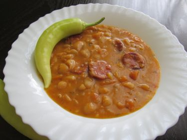

Pasul

300 g getrocknete weiße Bohnen (z. B. Cannellini oder Navy Beans),
300 g geräuchertes Fleisch (z. B. Rindfleisch, Lamm oder Würstchen),
1 Zwiebel (fein gehackt),
2 Karotten (in Scheiben geschnitten),
2 Knoblauchzehen (fein gehackt),
2 EL Paprikapulver (mild oder scharf, je nach Geschmack),
1 Lorbeerblatt,
1 TL getrockneter Thymian,
1 TL Salz (nach Geschmack),
1/2 TL schwarzer Pfeffer,
2 EL Mehl,
2 EL Olivenöl oder Sonnenblumenöl,
1 EL Tomatenmark,
1,5 Liter Wasser oder Brühe und
frische Petersilie zum Garnieren.
Zubereitung
Bohnen vorbereiten:Die Bohnen in einer Schüssel mit reichlich Wasser über Nacht einweichen. Vor der Zubereitung abgießen und mit frischem Wasser abspülen.
Bohnen und Fleisch kochen:In einem großen Topf die Bohnen mit 1,5 Liter Wasser aufsetzen. Das geräucherte Fleisch hinzufügen und bei mittlerer Hitze etwa 1 Stunde köcheln lassen, bis die Bohnen weich sind. Das Fleisch herausnehmen, etwas abkühlen lassen und in mundgerechte Stücke schneiden.
Gemüse anbraten:In einer Pfanne das Öl erhitzen und die Zwiebel glasig anbraten. Den Knoblauch, Karotten und das Paprikapulver hinzufügen und kurz mitrösten. Das Mehl einrühren, damit die Mischung leicht eindickt, dann das Tomatenmark unterrühren.
Eintopf fertigstellen:Die angebratene Mischung in den Topf mit den Bohnen geben. Lorbeerblatt, Thymian, Salz und Pfeffer hinzufügen. Alles gut umrühren und weitere 20–30 Minuten köcheln lassen, bis der Eintopf eine sämige Konsistenz erreicht.
Servieren:Vor dem Servieren die Lorbeerblätter entfernen. Den Pasulj mit frischer Petersilie garnieren und mit frischem Brot oder einem Stück Fli servieren.